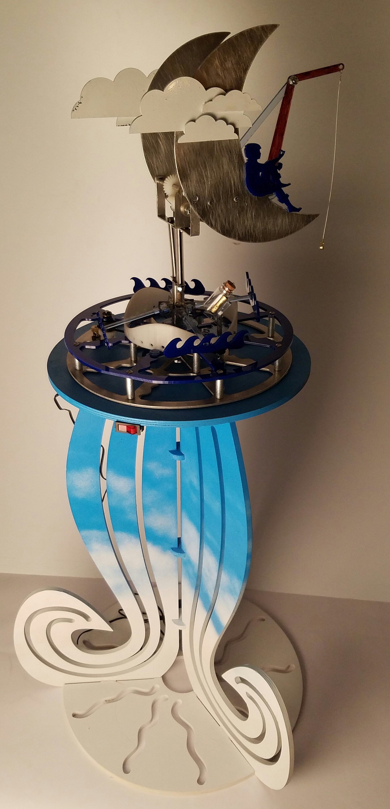
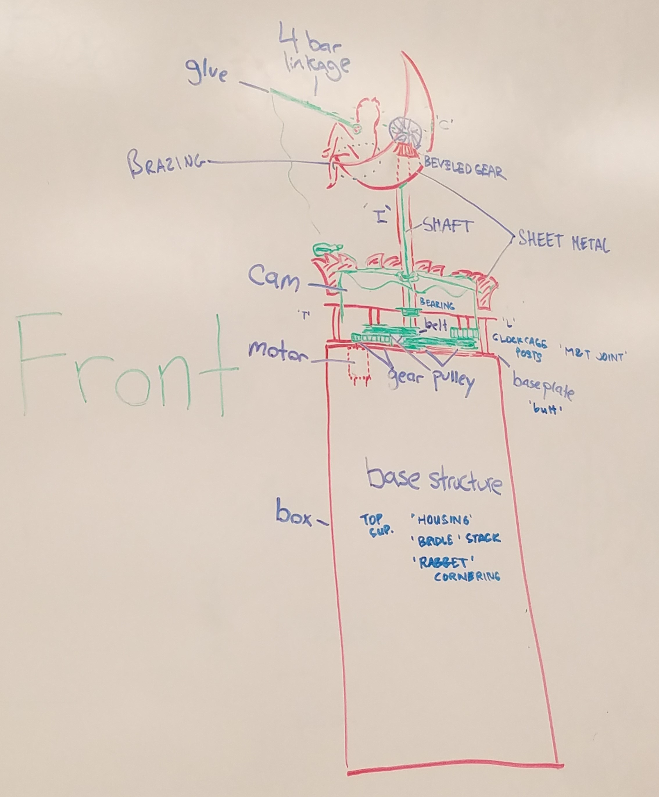

October-November 2016
Introduction to Mechanical Prototyping
This class had a few weeks of instruction on different types of mechanical joints, fasteners, gearboxes, etc. and then we spent the remainder of the semester in teams of 5-6 students designing and building two fully functional mechanical sculptures. The sculptures had to include one of each joint, fastener, and structure type we had studied, and loosely fit into the “aquatic” theme.
The first sculpture we built was called “Dream Work”, taking inspiration from the DreamWorks logo to make the boy fishing from the moon come to life. This included a series of waves that gently rocked up and down as they rode along a rotating cam, a message-in-a-bottle that spun around on the sprocket driving the cam, and a boy with a fishing pole that swayed forwards and backwards with a four-bar linkage system.
Specifically, I focused on the lower gearbox that transferred motion both to the waves and to the rocking fishing pole at the top. I also designed the waves that were loosely constrained and rode along the spinning cam to produce an organic, rocking motion. It was a bit of a challenge having several people working on different components of the same assembly, so I also took time to periodically check in with the different sub-teams to make sure everything fit together properly in CAD before we moved on to manufacturing. For the final touch, I painted the stand of the sculpture to look like a cloudy sky in order to add to our surreal scene bridging the gap between water, sky, and space.
 